Code
library(tidyverse)
library(naniar)
library(skimr)
library(jsonlite)Fase ETL: extracción, transformación y carga de datos - listings.csv
library(tidyverse)
library(naniar)
library(skimr)
library(jsonlite)Este documento recoge la fase de ETL (Extracción, Transformación y Carga) del dataset de Airbnb (2008-2021) proporcionado para el TFM. El objetivo de esta fase es dejar un conjunto de datos limpio, documentado y listo para las fases posteriores de clustering y modelado predictivo de precio.
A lo largo del documento no solo se aplican las transformaciones, sino que se documenta el razonamiento y la evidencia que llevó a cada decisión — muchas hipótesis iniciales (basadas en la documentación genérica del dataset) se contrastaron con los datos reales y se revisaron cuando la evidencia no las respaldaba. Esa validación empírica es en sí misma parte del valor de esta fase.
listings <- read_csv("data/listings.csv", show_col_types = FALSE)glimpse(listings)Rows: 279,712
Columns: 33
$ listing_id <dbl> 281420, 3705183, 4082273, 4797344, 4823489…
$ name <chr> "Beautiful Flat in le Village Montmartre, …
$ host_id <dbl> 1466919, 10328771, 19252768, 10668311, 248…
$ host_since <date> 2011-12-03, 2013-11-29, 2014-07-31, 2013-…
$ host_location <chr> "Paris, Ile-de-France, France", "Paris, Il…
$ host_response_time <chr> NA, NA, NA, NA, NA, NA, NA, NA, NA, NA, NA…
$ host_response_rate <dbl> NA, NA, NA, NA, NA, NA, NA, NA, NA, NA, NA…
$ host_acceptance_rate <dbl> NA, NA, NA, NA, NA, NA, NA, NA, NA, NA, NA…
$ host_is_superhost <lgl> FALSE, FALSE, FALSE, FALSE, FALSE, FALSE, …
$ host_total_listings_count <dbl> 1, 1, 1, 1, 1, 1, 1, 1, 1, 1, 1, 1, 1, 1, …
$ host_has_profile_pic <lgl> TRUE, TRUE, TRUE, TRUE, TRUE, TRUE, TRUE, …
$ host_identity_verified <lgl> FALSE, TRUE, FALSE, TRUE, FALSE, TRUE, TRU…
$ neighbourhood <chr> "Buttes-Montmartre", "Buttes-Montmartre", …
$ district <chr> NA, NA, NA, NA, NA, NA, NA, NA, NA, NA, NA…
$ city <chr> "Paris", "Paris", "Paris", "Paris", "Paris…
$ latitude <dbl> 48.88668, 48.88617, 48.88112, 48.84571, 48…
$ longitude <dbl> 2.33343, 2.34515, 2.31712, 2.30584, 2.2697…
$ property_type <chr> "Entire apartment", "Entire apartment", "E…
$ room_type <chr> "Entire place", "Entire place", "Entire pl…
$ accommodates <dbl> 2, 2, 2, 2, 2, 2, 2, 2, 2, 2, 2, 2, 2, 2, …
$ bedrooms <dbl> 1, 1, 1, 1, 1, 1, 1, 1, 1, 1, 1, 1, 1, 1, …
$ amenities <chr> "[\"Heating\", \"Kitchen\", \"Washer\", \"…
$ price <dbl> 53, 120, 89, 58, 60, 95, 80, 59, 80, 90, 6…
$ minimum_nights <dbl> 2, 2, 2, 2, 2, 2, 2, 2, 2, 2, 2, 2, 2, 2, …
$ maximum_nights <dbl> 1125, 1125, 1125, 1125, 1125, 1125, 1125, …
$ review_scores_rating <dbl> 100, 100, 100, 100, 100, 100, 100, 100, 10…
$ review_scores_accuracy <dbl> 10, 10, 10, 10, 10, 10, 10, 10, 10, 10, 10…
$ review_scores_cleanliness <dbl> 10, 10, 10, 10, 10, 10, 10, 10, 10, 10, 10…
$ review_scores_checkin <dbl> 10, 10, 10, 10, 10, 10, 10, 10, 10, 10, 10…
$ review_scores_communication <dbl> 10, 10, 10, 10, 10, 10, 10, 10, 10, 10, 10…
$ review_scores_location <dbl> 10, 10, 10, 10, 10, 10, 10, 10, 10, 10, 10…
$ review_scores_value <dbl> 10, 10, 10, 10, 10, 10, 10, 10, 10, 10, 10…
$ instant_bookable <lgl> FALSE, FALSE, FALSE, FALSE, FALSE, FALSE, …skim(listings)| Name | listings |
| Number of rows | 279712 |
| Number of columns | 33 |
| _______________________ | |
| Column type frequency: | |
| character | 9 |
| Date | 1 |
| logical | 4 |
| numeric | 19 |
| ________________________ | |
| Group variables | None |
Variable type: character
| skim_variable | n_missing | complete_rate | min | max | empty | n_unique | whitespace |
|---|---|---|---|---|---|---|---|
| name | 175 | 1.00 | 1 | 255 | 0 | 265851 | 0 |
| host_location | 840 | 1.00 | 1 | 255 | 0 | 7150 | 0 |
| host_response_time | 128782 | 0.54 | 12 | 18 | 0 | 4 | 0 |
| neighbourhood | 0 | 1.00 | 3 | 26 | 0 | 660 | 0 |
| district | 242700 | 0.13 | 5 | 13 | 0 | 5 | 0 |
| city | 0 | 1.00 | 4 | 14 | 0 | 10 | 0 |
| property_type | 0 | 1.00 | 3 | 34 | 0 | 144 | 0 |
| room_type | 0 | 1.00 | 10 | 12 | 0 | 4 | 0 |
| amenities | 0 | 1.00 | 2 | 3154 | 0 | 245003 | 0 |
Variable type: Date
| skim_variable | n_missing | complete_rate | min | max | median | n_unique |
|---|---|---|---|---|---|---|
| host_since | 165 | 1 | 2008-08-12 | 2021-02-26 | 2016-02-14 | 4240 |
Variable type: logical
| skim_variable | n_missing | complete_rate | mean | count |
|---|---|---|---|---|
| host_is_superhost | 165 | 1 | 0.18 | FAL: 229294, TRU: 50253 |
| host_has_profile_pic | 165 | 1 | 1.00 | TRU: 278631, FAL: 916 |
| host_identity_verified | 165 | 1 | 0.72 | TRU: 201191, FAL: 78356 |
| instant_bookable | 0 | 1 | 0.41 | FAL: 164105, TRU: 115607 |
Variable type: numeric
| skim_variable | n_missing | complete_rate | mean | sd | p0 | p25 | p50 | p75 | p100 | hist |
|---|---|---|---|---|---|---|---|---|---|---|
| listing_id | 0 | 1.00 | 26381955.49 | 14425758.69 | 2577.00 | 13844618.75 | 27670985.00 | 39784850.75 | 4.834353e+07 | ▅▅▅▆▇ |
| host_id | 0 | 1.00 | 108165773.09 | 110856993.22 | 1822.00 | 17206558.00 | 58269113.50 | 183285318.75 | 3.901874e+08 | ▇▂▂▂▁ |
| host_response_rate | 128782 | 0.54 | 0.87 | 0.28 | 0.00 | 0.90 | 1.00 | 1.00 | 1.000000e+00 | ▁▁▁▁▇ |
| host_acceptance_rate | 113087 | 0.60 | 0.83 | 0.29 | 0.00 | 0.78 | 0.98 | 1.00 | 1.000000e+00 | ▁▁▁▁▇ |
| host_total_listings_count | 165 | 1.00 | 24.58 | 284.04 | 0.00 | 1.00 | 1.00 | 4.00 | 7.235000e+03 | ▇▁▁▁▁ |
| latitude | 0 | 1.00 | 18.76 | 32.56 | -34.26 | -22.96 | 40.71 | 41.91 | 4.890000e+01 | ▅▁▁▂▇ |
| longitude | 0 | 1.00 | 12.60 | 73.08 | -99.34 | -43.20 | 2.38 | 28.99 | 1.513400e+02 | ▃▂▇▁▂ |
| accommodates | 0 | 1.00 | 3.29 | 2.13 | 0.00 | 2.00 | 2.00 | 4.00 | 1.600000e+01 | ▇▅▁▁▁ |
| bedrooms | 29435 | 0.89 | 1.52 | 1.15 | 1.00 | 1.00 | 1.00 | 2.00 | 5.000000e+01 | ▇▁▁▁▁ |
| price | 0 | 1.00 | 608.79 | 3441.83 | 0.00 | 75.00 | 150.00 | 474.00 | 6.252160e+05 | ▇▁▁▁▁ |
| minimum_nights | 0 | 1.00 | 8.05 | 31.52 | 1.00 | 1.00 | 2.00 | 5.00 | 9.999000e+03 | ▇▁▁▁▁ |
| maximum_nights | 0 | 1.00 | 27558.60 | 7282875.16 | 1.00 | 45.00 | 1125.00 | 1125.00 | 2.147484e+09 | ▇▁▁▁▁ |
| review_scores_rating | 91405 | 0.67 | 93.41 | 10.07 | 20.00 | 91.00 | 96.00 | 100.00 | 1.000000e+02 | ▁▁▁▁▇ |
| review_scores_accuracy | 91713 | 0.67 | 9.57 | 0.99 | 2.00 | 9.00 | 10.00 | 10.00 | 1.000000e+01 | ▁▁▁▁▇ |
| review_scores_cleanliness | 91665 | 0.67 | 9.31 | 1.15 | 2.00 | 9.00 | 10.00 | 10.00 | 1.000000e+01 | ▁▁▁▁▇ |
| review_scores_checkin | 91771 | 0.67 | 9.70 | 0.87 | 2.00 | 10.00 | 10.00 | 10.00 | 1.000000e+01 | ▁▁▁▁▇ |
| review_scores_communication | 91687 | 0.67 | 9.70 | 0.89 | 2.00 | 10.00 | 10.00 | 10.00 | 1.000000e+01 | ▁▁▁▁▇ |
| review_scores_location | 91775 | 0.67 | 9.63 | 0.83 | 2.00 | 9.00 | 10.00 | 10.00 | 1.000000e+01 | ▁▁▁▁▇ |
| review_scores_value | 91785 | 0.67 | 9.34 | 1.04 | 2.00 | 9.00 | 10.00 | 10.00 | 1.000000e+01 | ▁▁▁▁▇ |
El dataset contiene 279.712 filas y 33 columnas, en línea con lo indicado en la documentación del dataset (~250 mil registros).
miss_var_summary(listings) %>% print(n = Inf)# A tibble: 33 × 3
variable n_miss pct_miss
<chr> <int> <num>
1 district 242700 86.8
2 host_response_time 128782 46.0
3 host_response_rate 128782 46.0
4 host_acceptance_rate 113087 40.4
5 review_scores_value 91785 32.8
6 review_scores_location 91775 32.8
7 review_scores_checkin 91771 32.8
8 review_scores_accuracy 91713 32.8
9 review_scores_communication 91687 32.8
10 review_scores_cleanliness 91665 32.8
11 review_scores_rating 91405 32.7
12 bedrooms 29435 10.5
13 host_location 840 0.300
14 name 175 0.0626
15 host_since 165 0.0590
16 host_is_superhost 165 0.0590
17 host_total_listings_count 165 0.0590
18 host_has_profile_pic 165 0.0590
19 host_identity_verified 165 0.0590
20 listing_id 0 0
21 host_id 0 0
22 neighbourhood 0 0
23 city 0 0
24 latitude 0 0
25 longitude 0 0
26 property_type 0 0
27 room_type 0 0
28 accommodates 0 0
29 amenities 0 0
30 price 0 0
31 minimum_nights 0 0
32 maximum_nights 0 0
33 instant_bookable 0 0 gg_miss_var(listings) +
labs(title = "Valores ausentes por variable (antes de limpieza)")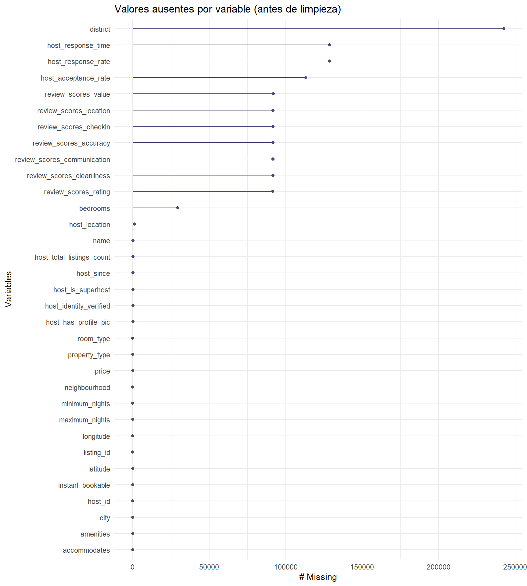
vis_miss(listings, warn_large_data = FALSE) +
theme(plot.margin = margin(t = 40, r = 10, b = 10, l = 10))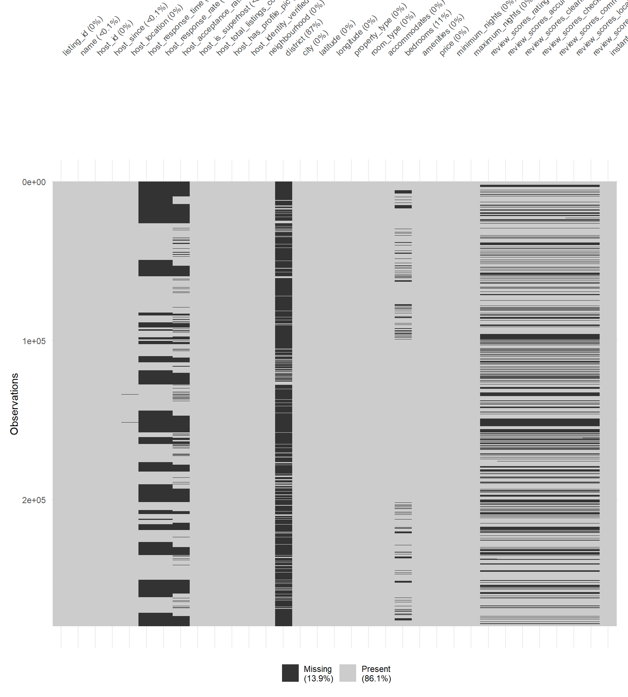
Variables con mayor proporción de nulos: district (86,8%), host_response_time/ host_response_rate (46,0%), host_acceptance_rate (40,4%), los 6 review_scores_* más review_scores_rating (~32,7-32,8%), y bedrooms (10,5%).
La documentación original del dataset advierte de inconsistencias geográficas (distinta granularidad y distinta nomenclatura para un mismo lugar). Antes de construir cualquier proceso de limpieza, se comprobó si esos problemas están realmente presentes en este dataset en concreto.
listings %>%
summarise(
n_city = n_distinct(city, na.rm = TRUE),
n_district = n_distinct(district, na.rm = TRUE),
n_neighbourhood = n_distinct(neighbourhood, na.rm = TRUE)
)# A tibble: 1 × 3
n_city n_district n_neighbourhood
<int> <int> <int>
1 10 5 660listings %>%
count(city, sort = TRUE) %>%
print(n = 50)# A tibble: 10 × 2
city n
<chr> <int>
1 Paris 64690
2 New York 37012
3 Sydney 33630
4 Rome 27647
5 Rio de Janeiro 26615
6 Istanbul 24519
7 Mexico City 20065
8 Bangkok 19361
9 Cape Town 19086
10 Hong Kong 7087Hallazgo: el dataset contiene únicamente 10 ciudades (Paris, New York, Sydney, Rome, Rio de Janeiro, Istanbul, Mexico City, Bangkok, Cape Town, Hong Kong), sin ninguna variante de nomenclatura ni valores ausentes en city. Es un dataset ya curado a estas 10 ciudades, a diferencia del dataset global de Kaggle que describe la documentación genérica.
listings %>%
filter(!is.na(district)) %>%
count(district, city, sort = TRUE)# A tibble: 5 × 3
district city n
<chr> <chr> <int>
1 Manhattan New York 16553
2 Brooklyn New York 14474
3 Queens New York 4704
4 Bronx New York 992
5 Staten Island New York 289district solo está poblado para New York (sus 5 distritos administrativos), sin ambigüedad: city ya identifica esas filas como “New York” de forma consistente. Se conserva como variable auxiliar opcional, no requiere limpieza.
listings %>%
distinct(city, neighbourhood) %>%
count(city, sort = TRUE)# A tibble: 10 × 2
city n
<chr> <int>
1 New York 220
2 Rio de Janeiro 151
3 Cape Town 93
4 Bangkok 50
5 Istanbul 39
6 Sydney 38
7 Paris 20
8 Hong Kong 18
9 Mexico City 16
10 Rome 15# Duplicados por normalización de texto (minúsculas + trim)
listings %>%
distinct(neighbourhood) %>%
mutate(neighbourhood_norm = str_to_lower(str_trim(neighbourhood))) %>%
count(neighbourhood_norm, sort = TRUE) %>%
filter(n > 1)# A tibble: 0 × 2
# ℹ 2 variables: neighbourhood_norm <chr>, n <int># Neighbourhoods que aparecen en más de una ciudad
listings %>%
distinct(city, neighbourhood) %>%
count(neighbourhood, sort = TRUE) %>%
filter(n > 1)# A tibble: 0 × 2
# ℹ 2 variables: neighbourhood <chr>, n <int>Conclusión de la auditoría geográfica: city, district y neighbourhood están limpios (0 duplicados de texto, 0 solapamientos entre ciudades). No es necesario ningún proceso de normalización geográfica ni geocoding por coordenadas — se evaluó como estrategia (uniones espaciales con sf/rnaturalearth para resolver país/región/ ciudad a partir de latitude/longitude) pero se descartó por sobreingeniería una vez comprobado que el problema que pretendía resolver no está presente en estos datos.
price (sin normalizar moneda)listings %>%
summarise(
n = n(),
n_price_na = sum(is.na(price)),
n_price_zero_o_negativo = sum(price <= 0, na.rm = TRUE),
min = min(price, na.rm = TRUE),
max = max(price, na.rm = TRUE),
mediana = median(price, na.rm = TRUE)
)# A tibble: 1 × 6
n n_price_na n_price_zero_o_negativo min max mediana
<int> <int> <int> <dbl> <dbl> <dbl>
1 279712 0 113 0 625216 150ggplot(listings %>% filter(price > 0), aes(x = price)) +
geom_histogram(bins = 100) +
scale_x_log10() +
labs(title = "Distribución de price (escala log, sin normalizar moneda)",
x = "price (moneda local, log)", y = "nº de listings")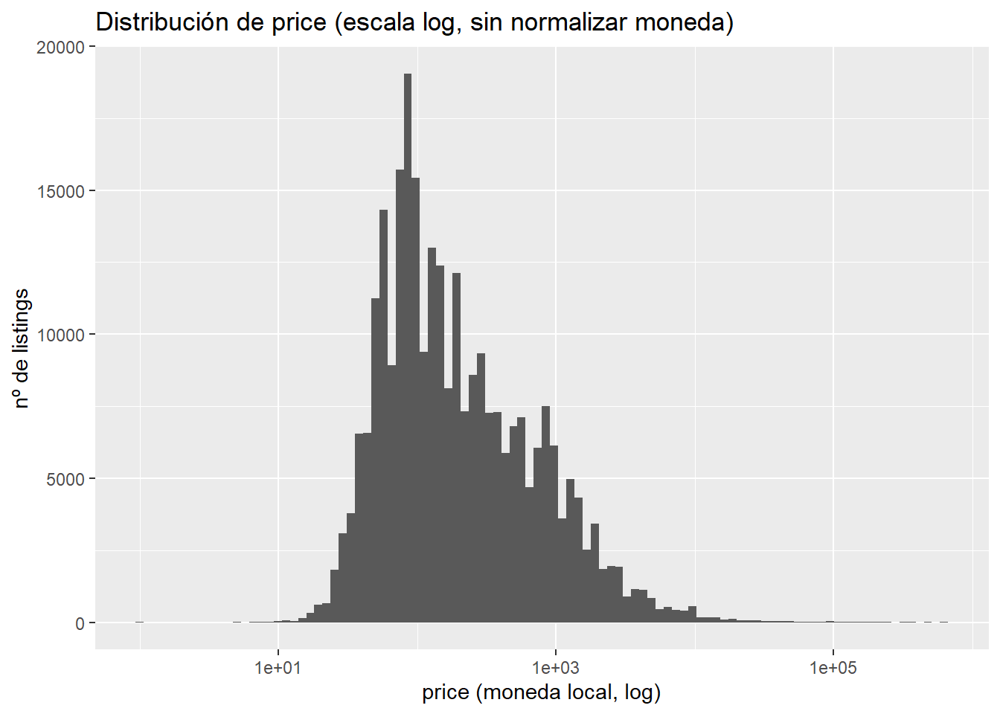
price está en la moneda local de cada país, por lo que no es comparable entre ciudades todavía — se resuelve en la sección 2 (conversión de moneda).
amenitieslistings %>% pull(amenities) %>% head(5)[1] "[\"Heating\", \"Kitchen\", \"Washer\", \"Wifi\", \"Long term stays allowed\"]"
[2] "[\"Shampoo\", \"Heating\", \"Kitchen\", \"Essentials\", \"Washer\", \"Dryer\", \"Wifi\", \"Long term stays allowed\"]"
[3] "[\"Heating\", \"TV\", \"Kitchen\", \"Washer\", \"Wifi\", \"Long term stays allowed\"]"
[4] "[\"Heating\", \"TV\", \"Kitchen\", \"Wifi\", \"Long term stays allowed\"]"
[5] "[\"Heating\", \"TV\", \"Kitchen\", \"Essentials\", \"Hair dryer\", \"Washer\", \"Dryer\", \"Bathtub\", \"Wifi\", \"Elevator\", \"Long term stays allowed\", \"Cable TV\"]"amenities es un string en formato JSON (lista de amenities entre corchetes). Se parsea en detalle en la sección 4.
listings %>% count(property_type, sort = TRUE) %>% print(n = 30)# A tibble: 144 × 2
property_type n
<chr> <int>
1 Entire apartment 138989
2 Private room in apartment 47322
3 Private room in house 13292
4 Entire house 13273
5 Entire condominium 11250
6 Room in boutique hotel 5771
7 Entire loft 4587
8 Private room in condominium 4462
9 Private room in bed and breakfast 4238
10 Entire serviced apartment 3973
11 Room in hotel 3205
12 Private room in townhouse 2959
13 Shared room in apartment 2420
14 Entire townhouse 2331
15 Entire guest suite 2273
16 Private room in serviced apartment 1542
17 Entire villa 1508
18 Room in aparthotel 1495
19 Private room in guest suite 1370
20 Private room in guesthouse 1337
21 Private room in hostel 1232
22 Entire guesthouse 1084
23 Room in bed and breakfast 1045
24 Private room in loft 922
25 Room in serviced apartment 860
26 Shared room in hostel 824
27 Shared room in house 637
28 Room in hostel 575
29 Private room in villa 563
30 Entire cottage 562
# ℹ 114 more rowslistings %>% count(room_type, sort = TRUE)# A tibble: 4 × 2
room_type n
<chr> <int>
1 Entire place 182005
2 Private room 86988
3 Hotel room 5857
4 Shared room 4862Dado que solo hay 10 ciudades (sección 1.4), se construye una tabla de mapeo manual ciudad → país → moneda → tipo de cambio, en vez de inferir el país mediante coordenadas (innecesario para solo 10 valores conocidos).
Fuente de los tipos de cambio: European Central Bank, Euro foreign exchange reference rates, 31 de agosto de 2026. https://www.ecb.europa.eu/stats/eurofxref/eurofxref-daily.xml
currency_map <- tribble(
~city, ~country, ~currency, ~rate_to_eur,
"Paris", "France", "EUR", 1,
"Rome", "Italy", "EUR", 1,
"New York", "United States", "USD", 1/1.1596,
"Sydney", "Australia", "AUD", 1/1.6191,
"Rio de Janeiro", "Brazil", "BRL", 1/5.9972,
"Istanbul", "Turkey", "TRY", 1/55.9648,
"Mexico City", "Mexico", "MXN", 1/19.7228,
"Bangkok", "Thailand", "THB", 1/38.458,
"Cape Town", "South Africa", "ZAR", 1/18.6885,
"Hong Kong", "Hong Kong", "HKD", 1/9.0888
)
listings <- listings %>%
filter(price > 0) %>%
left_join(currency_map, by = "city") %>%
mutate(price_eur = price * rate_to_eur) %>%
select(-country, -currency, -rate_to_eur)
summary(listings$price_eur) Min. 1st Qu. Median Mean 3rd Qu. Max.
0.11 31.20 60.00 100.77 100.05 104251.32 El filter(price > 0) descarta aquí los 113 listings con price = 0 ya detectados en la sección 1.5 (n_price_zero_o_negativo) — un precio de 0 no es un precio de mercado real y no tiene sentido convertirlo de moneda. No hay ningún caso negativo. El dataset pasa así de 279.712 a 279.599 filas, la cifra que aparece de aquí en adelante.
listings %>%
group_by(city) %>%
summarise(
n = n(),
mediana_eur = median(price_eur),
p95_eur = quantile(price_eur, 0.95),
max_eur = max(price_eur)
) %>%
arrange(desc(max_eur))# A tibble: 10 × 5
city n mediana_eur p95_eur max_eur
<chr> <int> <dbl> <dbl> <dbl>
1 Rio de Janeiro 26608 46.7 326. 104251.
2 Mexico City 20058 33.7 145. 25301.
3 Sydney 33630 74.1 432. 17672.
4 Paris 64628 80 270 12000
5 Rome 27641 65 240 10571
6 Cape Town 19086 57.2 421. 9632.
7 Hong Kong 7087 42.5 213. 9205.
8 New York 36984 85.4 301. 8624.
9 Bangkok 19360 28.6 137. 7805.
10 Istanbul 24517 4.50 21.2 3208.ggplot(listings, aes(x = reorder(city, price_eur, FUN = median), y = price_eur)) +
geom_boxplot(outlier.alpha = 0.2) +
scale_y_log10() +
coord_flip() +
labs(title = "Distribución de price_eur por ciudad (escala log)",
x = NULL, y = "price_eur (log)")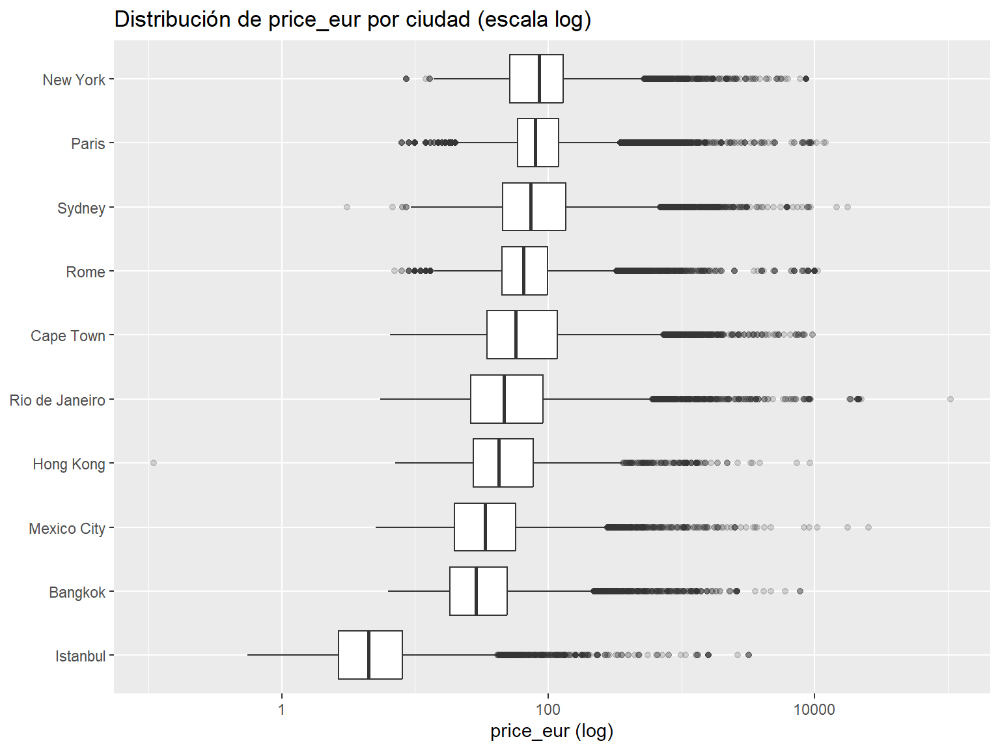
Al observar los precios más altos ya convertidos a EUR, varios de ellos combinan un precio desproporcionado con ausencia de reseñas (review_scores_rating NA). Antes de definir un criterio de outlier, se comprueba con un umbral exploratorio fijo si ese patrón (precio extremo + sin reviews) es general en las 10 ciudades o un caso aislado:
listings %>%
filter(price_eur > 2000) %>%
group_by(city) %>%
summarise(
n_extremos = n(),
pct_sin_reviews = mean(is.na(review_scores_rating)) * 100
) %>%
arrange(desc(n_extremos))# A tibble: 10 × 3
city n_extremos pct_sin_reviews
<chr> <int> <dbl>
1 Rio de Janeiro 103 74.8
2 Sydney 75 73.3
3 Cape Town 64 87.5
4 New York 63 54.0
5 Paris 57 43.9
6 Rome 52 61.5
7 Bangkok 21 42.9
8 Mexico City 20 60
9 Hong Kong 9 33.3
10 Istanbul 5 40 listings %>%
filter(price_eur <= 2000) %>%
summarise(pct_sin_reviews = mean(is.na(review_scores_rating)) * 100)# A tibble: 1 × 1
pct_sin_reviews
<dbl>
1 32.6El contraste es claro: 32,6% de los listings sin reviews en el conjunto general (price_eur <= 2000), frente a un 33%-87,5% dentro del grupo de precios extremos (price_eur > 2000), y presente en las 10 ciudades, no solo en una. Este patrón es consistente con una práctica conocida de Airbnb: fijar un precio disparatado para bloquear el calendario de disponibilidad en lugar de pausar el anuncio, en vez de un error de captura de datos. El umbral fijo de 2.000€ es solo exploratorio (penaliza de forma desigual a ciudades con escalas de precio muy distintas, como Istanbul frente a Sydney); para la variable definitiva se usa un umbral relativo por ciudad:
listings <- listings %>%
group_by(city) %>%
mutate(
q1 = quantile(price_eur, 0.25),
q3 = quantile(price_eur, 0.75),
iqr = q3 - q1,
umbral_outlier = q3 + 3 * iqr
) %>%
ungroup() %>%
mutate(precio_sospechoso = price_eur > umbral_outlier & is.na(review_scores_rating))
listings %>% filter(precio_sospechoso) %>% count(city, sort = TRUE)# A tibble: 10 × 2
city n
<chr> <int>
1 Rio de Janeiro 1154
2 Sydney 945
3 Paris 939
4 Istanbul 717
5 Cape Town 619
6 Bangkok 555
7 New York 532
8 Rome 487
9 Mexico City 381
10 Hong Kong 142listings %>%
summarise(
n_total = n(),
n_sospechosos = sum(precio_sospechoso),
pct = round(100 * mean(precio_sospechoso), 2)
)# A tibble: 1 × 3
n_total n_sospechosos pct
<int> <int> <dbl>
1 279599 6471 2.31# q1/q3/iqr/umbral_outlier eran solo intermedias para calcular precio_sospechoso;
# se descartan para no arrastrarlas al resto del pipeline
listings <- listings %>% select(-q1, -q3, -iqr, -umbral_outlier)Decisión: se conserva precio_sospechoso como variable indicadora (no se eliminan filas del dataset general). Estos 6.471 casos (2,31% del total) se excluirán del entrenamiento del modelo de regresión de precio por no reflejar un precio de mercado real, pero se mantienen en el dataset para el resto de análisis. Se documenta como hallazgo cualitativo de interés para la parte del sponsor de la memoria.
ggplot(listings, aes(x = price_eur, fill = precio_sospechoso)) +
geom_histogram(bins = 100) +
scale_x_log10() +
labs(title = "price_eur: distribución general vs. casos marcados como precio_sospechoso",
x = "price_eur (log)", y = "nº de listings", fill = "Precio sospechoso")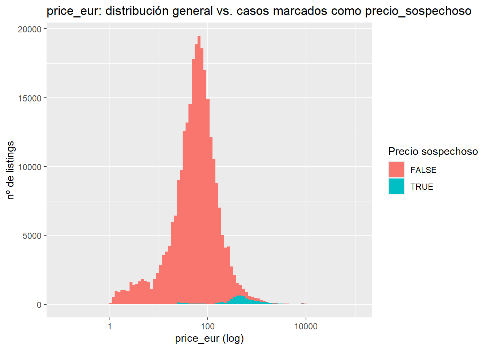
review_scores_*Las 7 variables de puntuación (rating + 6 subpuntuaciones) están fuertemente correlacionadas en su missingness: la inmensa mayoría de los nulos corresponde a listings sin reseñas todavía, no a datos perdidos por error.
listings <- listings %>%
mutate(has_reviews = !is.na(review_scores_rating))Antes de decidir cómo imputar, se identifican los casos con rating presente pero alguna subpuntuación ausente (un problema distinto al de los listings sin reviews):
listings %>%
filter(!is.na(review_scores_rating) &
(is.na(review_scores_accuracy) | is.na(review_scores_cleanliness) |
is.na(review_scores_checkin) | is.na(review_scores_communication) |
is.na(review_scores_location) | is.na(review_scores_value))) %>%
select(starts_with("review_scores")) %>%
rename_with(~ str_remove(.x, "review_scores_")) %>%
vis_miss()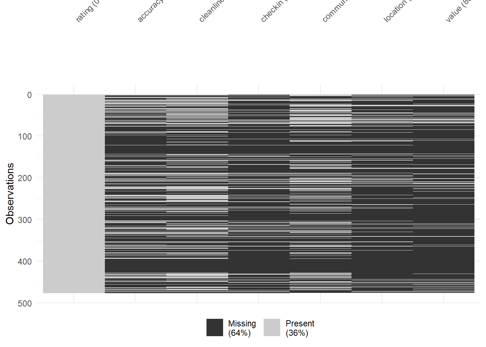
Estos casos (rating presente, alguna subpuntuación ausente) se imputan con la media de las demás subpuntuaciones de la misma fila (mismo listing, misma escala 0-10). Dentro de ese grupo puede haber un subgrupo residual sin ninguna subpuntuación disponible (la media de fila no tendría con qué calcularse); se comprueba antes de aplicar la imputación:
score_cols <- c("review_scores_accuracy", "review_scores_cleanliness",
"review_scores_checkin", "review_scores_communication",
"review_scores_location", "review_scores_value")
listings %>%
filter(has_reviews) %>%
rowwise() %>%
mutate(todas_na = all(is.na(c_across(all_of(score_cols))))) %>%
ungroup() %>%
summarise(n_casos = sum(todas_na))# A tibble: 1 × 1
n_casos
<int>
1 243Para ese subgrupo residual (el n_casos del resultado anterior) se aplica un fallback a la mediana global de cada subpuntuación (calculada solo entre listings con reviews), ya que no hay información dentro de la propia fila para imputar:
listings <- listings %>%
rowwise() %>%
mutate(
media_fila_scores = mean(c_across(all_of(score_cols)), na.rm = TRUE),
across(all_of(score_cols), ~ if_else(is.na(.x) & has_reviews, media_fila_scores, .x))
) %>%
ungroup() %>%
select(-media_fila_scores) %>%
mutate(across(
all_of(score_cols),
~ if_else(is.nan(.x) | (is.na(.x) & has_reviews),
median(.x[has_reviews], na.rm = TRUE),
.x)
))
# Verificación: solo deben quedar NA los listings sin reviews
listings %>% summarise(across(all_of(score_cols), ~sum(is.na(.x))))# A tibble: 1 × 6
review_scores_accuracy review_scores_cleanliness review_scores_checkin
<int> <int> <int>
1 91264 91264 91264
# ℹ 3 more variables: review_scores_communication <int>,
# review_scores_location <int>, review_scores_value <int>El resultado (91.264 nulos en las 6 columnas) es algo menor que el número de listings sin has_reviews. Se investiga la diferencia antes de asumir que es un error de la imputación:
# 1. ¿Cuántas filas tienen has_reviews == FALSE en el dataset actual?
listings %>% summarise(n_sin_reviews = sum(!has_reviews))# A tibble: 1 × 1
n_sin_reviews
<int>
1 91292# 2. ¿Hay filas con has_reviews == FALSE que sí tengan valor en alguna
# de las 6 columnas? (si diera > 0 en algún caso ajeno al esperado, sería un bug)
listings %>%
filter(!has_reviews) %>%
summarise(across(all_of(score_cols), ~sum(!is.na(.x))))# A tibble: 1 × 6
review_scores_accuracy review_scores_cleanliness review_scores_checkin
<int> <int> <int>
1 28 28 28
# ℹ 3 more variables: review_scores_communication <int>,
# review_scores_location <int>, review_scores_value <int>Diagnóstico: hay 91.292 listings sin has_reviews, pero 28 de ellos tienen valores reales en las 6 subpuntuaciones pese a no tener rating — es decir, has_reviews (definida solo a partir de rating) no captura correctamente esos 28 casos, que mantienen su información original intacta porque la condición de imputación (is.na(.x) & has_reviews) nunca los tocó. La cuenta cuadra exactamente: 91.292 − 28 = 91.264, el valor observado. No hay ningún error en la imputación.
Limitación conocida y documentada: existen esos 28 casos donde has_reviews == FALSE (por ausencia de rating) pero sí hay valores reales en las subpuntuaciones — una inconsistencia residual del propio dataset (0,01% de las filas). Dado su volumen despreciable, se decide no aplicar un tratamiento especial y documentarlo como limitación conocida, en vez de redefinir has_reviews.
bedroomslistings %>%
group_by(accommodates) %>%
summarise(
n = n(),
pct_na_bedrooms = round(100 * mean(is.na(bedrooms)), 1),
mediana_bedrooms = median(bedrooms, na.rm = TRUE)
) %>%
print(n = Inf)# A tibble: 16 × 4
accommodates n pct_na_bedrooms mediana_bedrooms
<dbl> <int> <dbl> <dbl>
1 1 25813 9.8 1
2 2 118323 16.9 1
3 3 27930 11.6 1
4 4 57250 5.1 2
5 5 13526 2 2
6 6 19453 1.1 2
7 7 3697 0.7 3
8 8 6514 0.6 3
9 9 1140 0.4 3
10 10 2630 1.3 4
11 11 367 0 4
12 12 1052 1 4
13 13 197 1 5
14 14 331 0.6 5
15 15 214 3.3 5
16 16 1162 5.8 6listings %>%
filter(!is.na(bedrooms)) %>%
group_by(accommodates) %>%
summarise(mediana_bedrooms = median(bedrooms)) %>%
ggplot(aes(x = accommodates, y = mediana_bedrooms)) +
geom_line() + geom_point() +
labs(title = "Relación entre accommodates y bedrooms (mediana)",
x = "accommodates", y = "bedrooms (mediana)")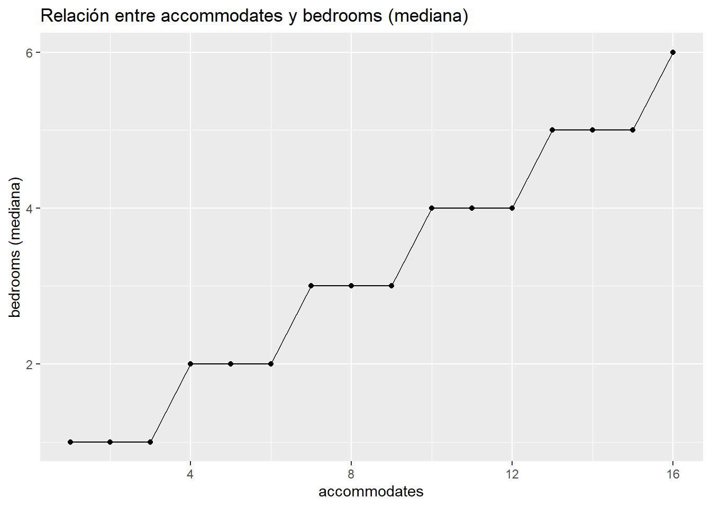
bedrooms (10,5% nulo) correlaciona claramente con accommodates, por lo que se imputa por la mediana dentro de cada grupo de accommodates en vez de una mediana global.
listings <- listings %>%
group_by(accommodates) %>%
mutate(bedrooms = if_else(is.na(bedrooms), median(bedrooms, na.rm = TRUE), bedrooms)) %>%
ungroup()
sum(is.na(listings$bedrooms))[1] 0host_response_rate / host_acceptance_rateCon un 40-46% de nulos, imputar introduciría demasiado ruido, y es plausible que la ausencia sea informativa en sí misma (un anfitrión sin historial de respuesta no tiene una “tasa” que imputar). Se comprobó si ambas variables faltan siempre juntas:
listings <- listings %>%
mutate(
has_response_rate = !is.na(host_response_rate),
has_acceptance_rate = !is.na(host_acceptance_rate)
)
listings %>%
summarise(
solo_response_na = sum(is.na(host_response_rate) & !is.na(host_acceptance_rate)),
solo_acceptance_na = sum(!is.na(host_response_rate) & is.na(host_acceptance_rate)),
ambas_na = sum(is.na(host_response_rate) & is.na(host_acceptance_rate))
)# A tibble: 1 × 3
solo_response_na solo_acceptance_na ambas_na
<int> <int> <int>
1 31597 15918 97104# host_response_time coincide exactamente con la ausencia de host_response_rate
listings %>%
summarise(coincide = sum(is.na(host_response_rate) == is.na(host_response_time)))# A tibble: 1 × 1
coincide
<int>
1 279599Resultado: aunque la mayoría de nulos coinciden (97.104 filas), hay divergencia real (31.597 + 15.918 filas donde solo una de las dos está ausente) — son señales relacionadas pero no idénticas. Se mantienen dos variables indicadoras separadas, sin fusionarlas. host_response_time coincide exactamente con host_response_rate y no requiere indicador propio.
amenitieslistings <- listings %>%
mutate(amenities_list = map(amenities, ~ {
x <- fromJSON(.x)
if (length(x) == 0) character(0) else as.character(x)
}),
n_amenities = map_int(amenities_list, length))
summary(listings$n_amenities) Min. 1st Qu. Median Mean 3rd Qu. Max.
0.00 13.00 18.00 19.56 26.00 89.00 amenities_freq <- listings %>%
select(listing_id, amenities_list) %>%
unnest(amenities_list) %>%
count(amenities_list, sort = TRUE)
nrow(amenities_freq)[1] 3270amenities_freq %>%
slice_max(n, n = 20) %>%
ggplot(aes(x = reorder(amenities_list, n), y = n)) +
geom_col() +
coord_flip() +
labs(title = "Top 20 amenities más frecuentes", x = NULL, y = "nº de listings")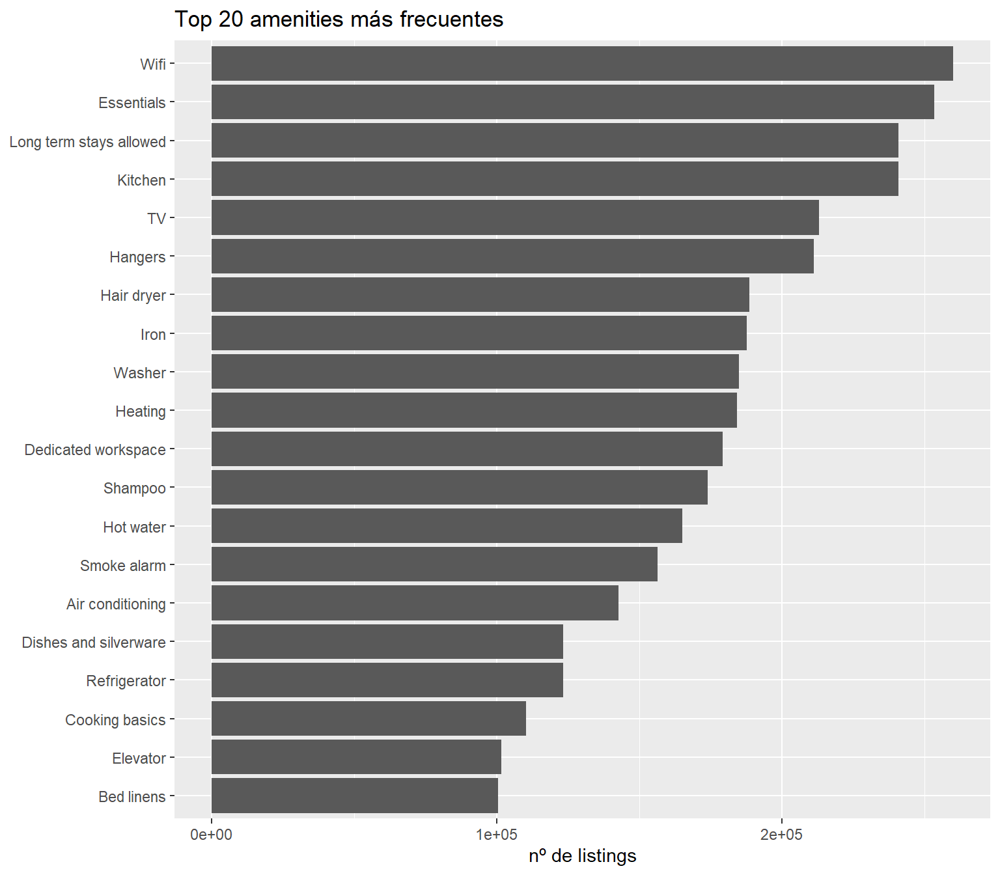
Con 3.270 amenities distintas (mucho texto libre y variantes de producto), no tiene sentido crear una variable por cada una. Se seleccionan variables booleanas por familia (agrupando variantes vía regex, no valores exactos) combinando frecuencia suficiente y relevancia de negocio. Se descartan por ser demasiado universales y poco discriminantes Essentials, Kitchen y Long term stays allowed (todas por encima del 86% de prevalencia, ver top-20 arriba) — no se les crea variable propia. Wifi (93,5%), aun siendo también muy prevalente, sí se conserva como variable por su relevancia directa para el objetivo del proyecto.
listings <- listings %>%
mutate(
has_wifi = str_detect(amenities, regex("wifi", ignore_case = TRUE)),
has_ac = str_detect(amenities, regex("air conditioning", ignore_case = TRUE)),
has_pool = str_detect(amenities, regex("\\bpool\\b", ignore_case = TRUE)),
has_gym = str_detect(amenities, regex("gym|fitness", ignore_case = TRUE)),
has_hot_tub = str_detect(amenities, regex("hot tub|jacuzzi", ignore_case = TRUE)),
has_fireplace = str_detect(amenities, regex("fireplace", ignore_case = TRUE)),
has_bbq = str_detect(amenities, regex("bbq grill|\\bgrill\\b(?! seulement| microwave)", ignore_case = TRUE)),
has_beach_access = str_detect(amenities, regex("beachfront|waterfront|\\bbeach\\b", ignore_case = TRUE)),
has_elevator = str_detect(amenities, regex("elevator", ignore_case = TRUE)),
has_dishwasher = str_detect(amenities, regex("dishwasher", ignore_case = TRUE)),
has_private_entrance = str_detect(amenities, regex("private entrance", ignore_case = TRUE)),
has_free_parking = str_detect(amenities, regex("free parking", ignore_case = TRUE)),
has_patio_balcony = str_detect(amenities, regex("patio or balcony", ignore_case = TRUE)),
has_ev_charger = str_detect(amenities, regex("ev charger", ignore_case = TRUE)),
has_view = str_detect(amenities, regex(" view", ignore_case = TRUE))
)
listings %>%
summarise(across(starts_with("has_"), ~round(100*mean(.x), 1))) %>%
pivot_longer(everything(), names_to = "amenity", values_to = "pct") %>%
arrange(desc(pct))# A tibble: 18 × 2
amenity pct
<chr> <dbl>
1 has_wifi 93.5
2 has_reviews 67.3
3 has_acceptance_rate 59.6
4 has_response_rate 54
5 has_ac 51.2
6 has_elevator 36.3
7 has_free_parking 26.2
8 has_private_entrance 25.1
9 has_patio_balcony 18
10 has_dishwasher 16.1
11 has_pool 13.4
12 has_gym 10.9
13 has_fireplace 6.4
14 has_bbq 5
15 has_hot_tub 4.7
16 has_beach_access 4.5
17 has_ev_charger 0.5
18 has_view 0 has_view sale con 0,0% de prevalencia redondeada — se comprueba la cifra exacta antes de decidir si se conserva o se descarta:
sum(listings$has_view)[1] 6Con solo 6 casos sobre 279.599 filas (el único término relacionado presente en el dataset es Mountain view), has_view no aporta capacidad predictiva real. Se descarta:
listings <- listings %>% select(-has_view)amenities_list (la lista parseada) ya cumplió su función para extraer n_amenities y las variables has_* — se elimina antes de seguir, porque al ser una list-column (cada celda contiene un vector, no un valor simple) no se puede exportar correctamente a CSV ni se representa bien en los gráficos de missingness:
listings <- listings %>% select(-amenities_list)Se repite el bloque de missingness y distribución de precio sobre el dataset ya limpio, como evidencia visual de que el proceso de limpieza funcionó:
miss_var_summary(listings) %>% print(n = Inf)# A tibble: 53 × 3
variable n_miss pct_miss
<chr> <int> <num>
1 district 242615 86.8
2 host_response_time 128701 46.0
3 host_response_rate 128701 46.0
4 host_acceptance_rate 113022 40.4
5 review_scores_rating 91292 32.7
6 review_scores_accuracy 91264 32.6
7 review_scores_cleanliness 91264 32.6
8 review_scores_checkin 91264 32.6
9 review_scores_communication 91264 32.6
10 review_scores_location 91264 32.6
11 review_scores_value 91264 32.6
12 host_location 840 0.300
13 name 175 0.0626
14 host_since 165 0.0590
15 host_is_superhost 165 0.0590
16 host_total_listings_count 165 0.0590
17 host_has_profile_pic 165 0.0590
18 host_identity_verified 165 0.0590
19 listing_id 0 0
20 host_id 0 0
21 neighbourhood 0 0
22 city 0 0
23 latitude 0 0
24 longitude 0 0
25 property_type 0 0
26 room_type 0 0
27 accommodates 0 0
28 bedrooms 0 0
29 amenities 0 0
30 price 0 0
31 minimum_nights 0 0
32 maximum_nights 0 0
33 instant_bookable 0 0
34 price_eur 0 0
35 precio_sospechoso 0 0
36 has_reviews 0 0
37 has_response_rate 0 0
38 has_acceptance_rate 0 0
39 n_amenities 0 0
40 has_wifi 0 0
41 has_ac 0 0
42 has_pool 0 0
43 has_gym 0 0
44 has_hot_tub 0 0
45 has_fireplace 0 0
46 has_bbq 0 0
47 has_beach_access 0 0
48 has_elevator 0 0
49 has_dishwasher 0 0
50 has_private_entrance 0 0
51 has_free_parking 0 0
52 has_patio_balcony 0 0
53 has_ev_charger 0 0 # Con el número de columnas ya añadidas (has_*, price_eur, etc.), pintar todas las
# variables en gg_miss_var/vis_miss satura el gráfico y la mayoría tienen 0 nulos.
# Se restringe a las que de verdad conservan algún nulo, que es lo relevante aquí.
cols_con_nulos <- listings %>%
summarise(across(everything(), ~sum(is.na(.x)))) %>%
pivot_longer(everything(), names_to = "variable", values_to = "n_na") %>%
filter(n_na > 0) %>%
pull(variable)
gg_miss_var(listings %>% select(all_of(cols_con_nulos))) +
labs(title = "Valores ausentes por variable (después de limpieza)")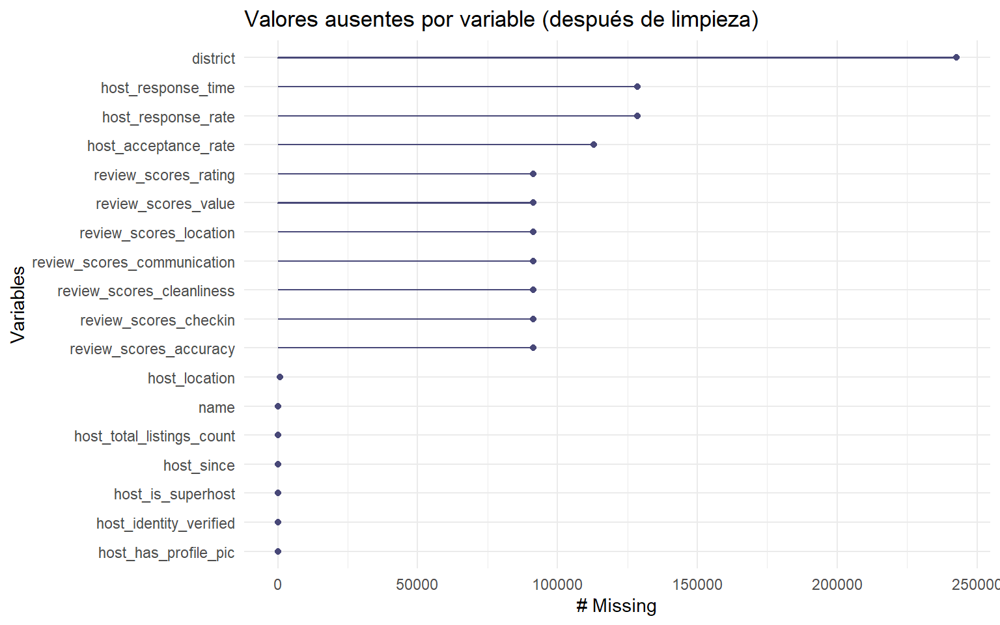
vis_miss(listings %>% select(all_of(cols_con_nulos)), warn_large_data = FALSE) +
theme(plot.margin = margin(t = 40, r = 10, b = 10, l = 10))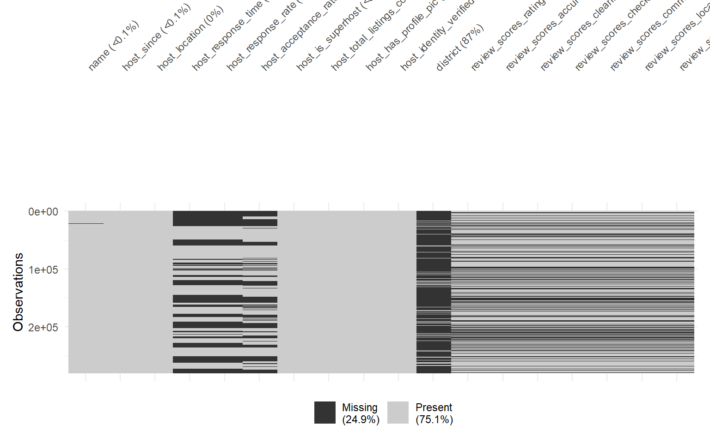
Tras la limpieza, los únicos nulos que quedan son los estructurales y deliberadamente no imputados: district (solo aplica a New York), review_scores_* para listings sin reviews, y host_response_rate/host_acceptance_rate/ host_response_time para anfitriones sin historial — todos ellos ya cubiertos por sus variables indicadoras (has_reviews, has_response_rate, has_acceptance_rate). bedrooms aparece con 0 nulos.
listings %>%
summarise(
n = n(),
min = min(price_eur),
mediana = median(price_eur),
max = max(price_eur)
)# A tibble: 1 × 4
n min mediana max
<int> <dbl> <dbl> <dbl>
1 279599 0.110 60 104251.ggplot(listings, aes(x = price_eur)) +
geom_histogram(bins = 100) +
scale_x_log10() +
labs(title = "Distribución de price_eur (dataset limpio, moneda común)",
x = "price_eur (log)", y = "nº de listings")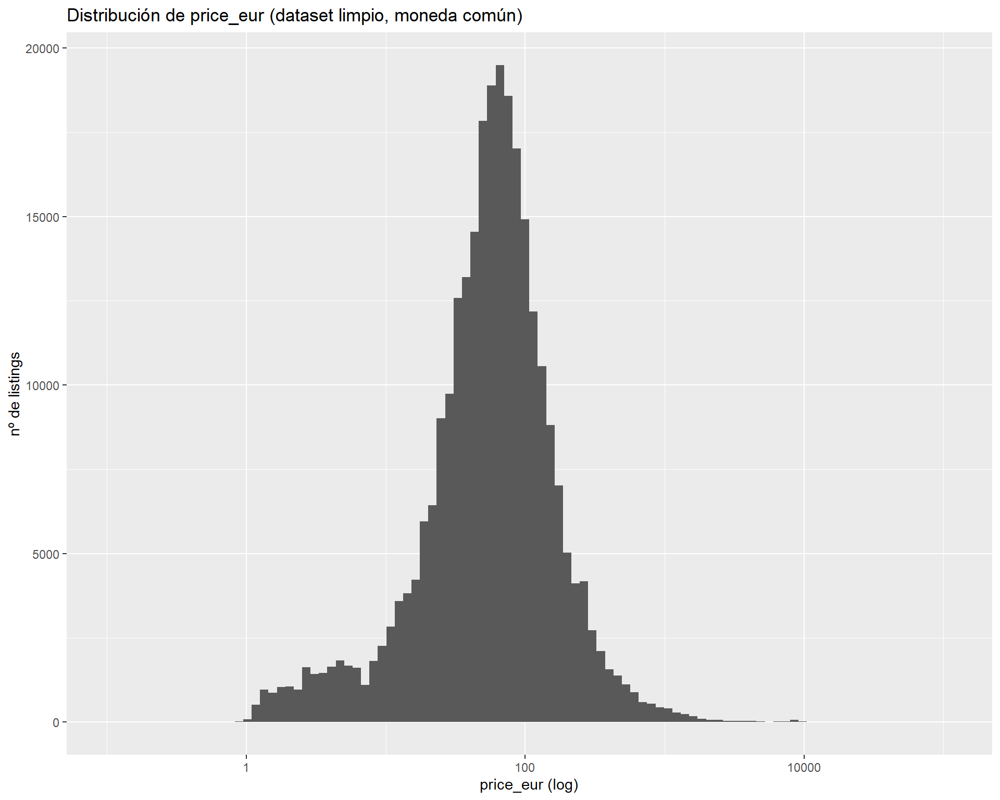
# Contraste directo: price (moneda local, antes) vs. price_eur (moneda común, después)
ggplot(listings, aes(x = price_eur, fill = precio_sospechoso)) +
geom_histogram(bins = 100) +
scale_x_log10() +
facet_wrap(~city, scales = "free_y", ncol = 3) +
labs(title = "price_eur por ciudad, con precio_sospechoso resaltado",
x = "price_eur (log)", y = "nº de listings", fill = "Precio sospechoso")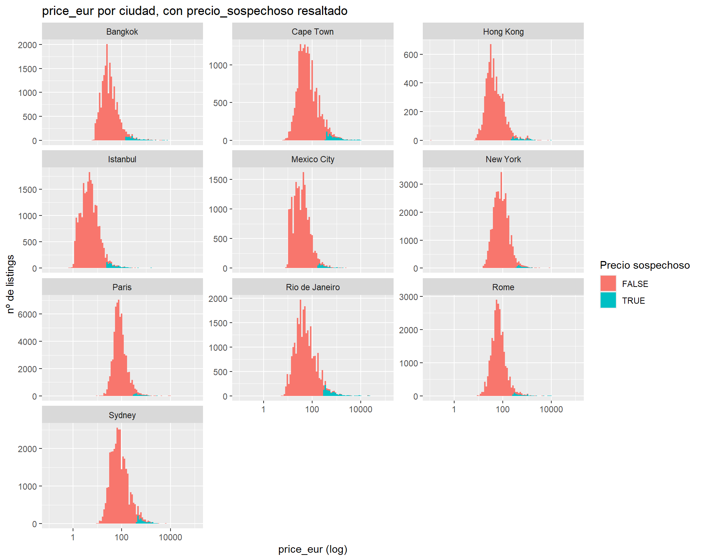
La comparación con la sección 1.5 (distribución de price en moneda local, sin convertir) muestra el efecto de la conversión de moneda: todas las ciudades quedan ahora en una escala comparable, y los casos de precio_sospechoso se concentran en la cola derecha de cada distribución, tal como se esperaba de su definición (Q3 + 3×IQR por ciudad).
El dataset limpio queda con 279.599 filas (las 279.712 originales menos los 113 casos de price = 0 descartados en la sección 2) y las variables originales más las añadidas en este documento (price_eur, precio_sospechoso, has_reviews, has_response_rate, has_acceptance_rate, n_amenities y las has_* de amenities).
write_csv(listings, "data/listings_clean.csv")